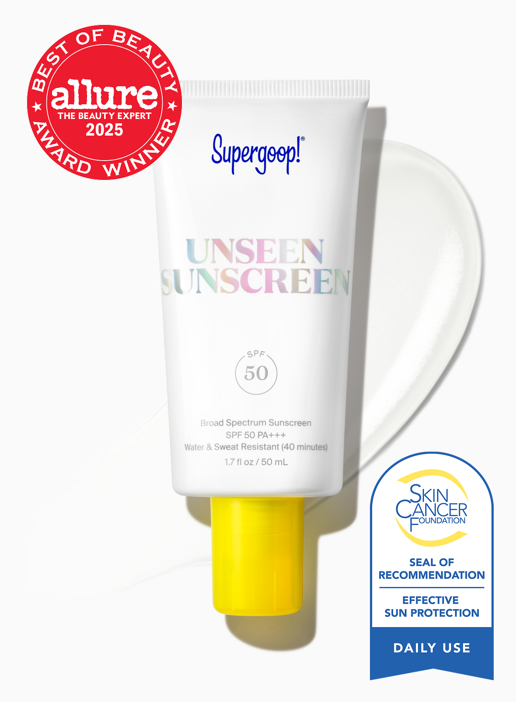
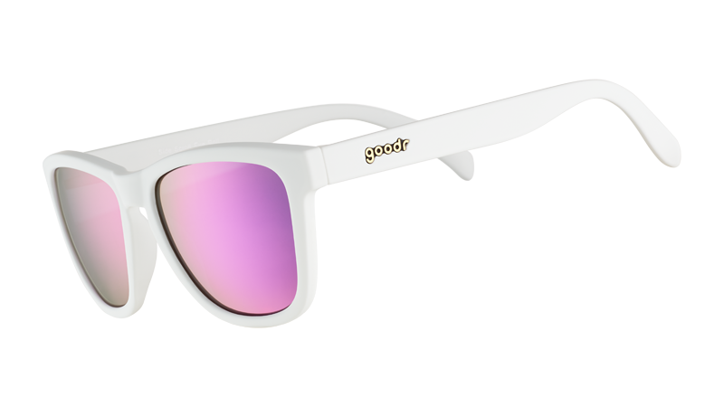

04 / 敏感肌问诊卡
敏感肌夏天防晒：先减少刺激，再谈精致
敏感肌最怕“我什么都想叠一点”。脸上承担不了全部压力时，就把帽子、太阳镜、防晒衣请上桌。

防晒霜不是越厚越安心
先看耐受、肤感、成膜和是否与底妆打架。新产品不要第一天就全脸硬上。
怕闷痘？早晨护肤别叠成千层饼，防晒前先把基础保湿做稳。
眼周难受？别硬忍，帽檐和太阳镜可以分担眼周压力。
不想补涂？硬防晒减少直晒，脸上防晒霜不用一个人扛全场。
晒后泛红？先降温、保湿、暂停刺激性护肤；明显不适时咨询专业人士。
早上别逞强流程
1. 清洁后做基础保湿，别临时试一堆新东西。
2. 防晒霜先小范围确认不明显不适，再正常上脸。
3. 出门时间长就靠帽子、太阳镜、防晒衣分担。
清爽防晒霜图源
Supergoop 商品页
防晒衣图源
Coolibar 商品页

太阳镜图源
goodr 商品页
这篇不是医疗建议。皮肤明显红肿、刺痛、脱皮或反复不适时，别靠导购文硬判断，找专业人士更稳。